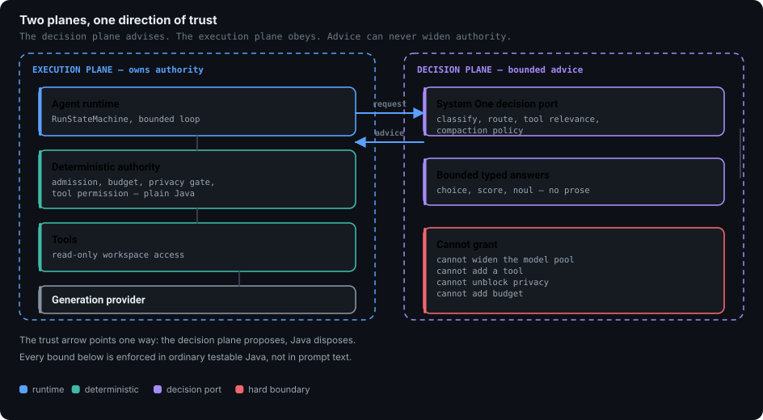

01What it does
Rahu answers questions about a codebase. It lists files, reads them, searches literal text, and writes an answer with a trace of how it got there.
It does not edit your repository, run your code, or write files. That limit is the reason it is safe to point at private code.
Reads
List, read and literal-search inside a workspace root, with typed results and a path boundary.
Decides
A bounded decision service picks the model, reasoning effort and relevant files. It proposes; Java disposes.
Accounts
Every dispatched request reserves money before it runs and settles after. One session allowance covers the whole run.
Gates
Outbound content is classified locally, twice: before admission and again before transport.
02Start here
| If you want to | Read | Run |
|---|---|---|
| Understand the design | Architecture | — |
| Know why it is built this way | Decision records | — |
| See what review found | Audit evidence | — |
| Build it | Setup runbook | ./mvnw clean verify |
| Try it with no network | Product spec | bin/rahu demo |
| Understand a requirement | Specifications | — |
The default verification path runs with no live model and no credentials.
Two tests read the real environment, so unset
OPENROUTER_API_KEY before ./mvnw verify or they fail by
design rather than by defect.
03The shape in one picture

04What is not finished
This is a dogfood alpha. Some things are built and proven, some are built and deliberately switched off, and some need an operator decision.
| Area | State | Note |
|---|---|---|
| Offline build and tests | Verified | 306 tests green on a clean verify |
| Release gates G01–G08 | Verified | Individually evidenced in the release manifest |
| Injection detection | Shadow only | Scored but never enforced; calibration is unproven |
| Search reranking | Default off | Built and tested; needs live measurement before enforcement |
| G09 dogfood run | Operator | Needs an aggregate spending ceiling |
| Acceptance A25–A32 | Partial | Covered by slice reviews rather than a clean pass |
A green test count is not a review. A passing detector does not mean all protected data was recognised. "Offline complete" is not declared, and shadow routing stays off until a separate promotion gate supports the change.
05Working rules
Four rules shaped this codebase, and each one exists because its absence caused a real defect.
- Test the contract, not the history. A test that pins a bug fails when you fix the bug. Several early tests here did exactly that.
- One rule, one owner. A security rule written twice is enforced once. The loopback rule was duplicated, and the first fix passed its tests because the tests covered one copy.
- Verify every claim at the current commit. Two audit rounds reported defects that had already been fixed.
- Nothing external. No CDN, no remote font, no telemetry. These pages render offline and make no network request.